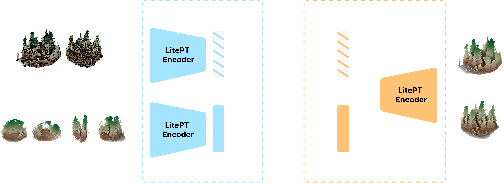

Methodology
We investigate two pretraining strategies for a common LitePT backbone — self-supervised and supervised — and transfer each to downstream forestry tasks via frozen features or fine-tuning, compared against training from scratch. This unified protocol enables a systematic comparison of representation learning strategies under identical transfer conditions and annotation budgets.
A
Self-Supervised Pretraining
Overall Workflow
An unlabeled pretraining corpus (≈15,900 ha) collected without any annotations.
The student learns to match the teacher's representations — no labels required.
The pretrained backbone is transferred to each downstream forestry task via frozen feature transfer or end-to-end fine-tuning.
Self-Distillation Pipeline
The student encodes masked, partial views of a forest point cloud; the teacher encodes the same scene in full. Two prediction heads align the student's representations with the momentum-updated teacher's — with no labels and no negative pairs.

Self-Distillation Loss
→
Local-to-global Distillation
The teacher encodes a global view and its local-global head predicts target Ptl; the student encodes a local view and predicts Psl with the same head.
Ll2g = Σ H(Ptl, Psl)
→
Masked-to-global Distillation
The teacher encodes the unmasked global view and its mask-global head predicts Ptm; the student encodes the corresponding masked global view and predicts Psm.
Lm2g = Σ H(Ptm, Psm)
Overall Workflow
The backbone is pretrained with full supervision on one forestry task (species classification shown) — repeated independently for each of the four tasks.
3
Remaining Tasks for Transfer
Each resulting encoder is transferred to the remaining tasks, excluding its own source task from evaluation.
Evaluating self-supervised pretraining
Per-point features from our frozen self-supervised backbone, projected to RGB via the top-3
principal components (PCA).
Semantic Segmentation
Instance Segmentation
Species Classification
Age regression
State-of-the-art semantic segmentation
We evaluate 3-class point-wise segmentation (ground / wood / leaf) on held-out forest plots,
comparing a training-free kNN probe against linear probing, decoder probing, training
from scratch, and full fine-tuning of the pretrained backbone.
Data efficiency
kNN alone scores decently with zero training;
fine-tuning beats scratch throughout, and pretraining's edge is largest when labels are scarce.
Training dynamics
Pretraining accelerates convergence —
fine-tuning for just 10 epochs already beats scratch trained for the full 100.
Qualitative comparison
Even the training-free kNN probe
(leftmost column) produces decent segmentations that closely track ground truth across
all three held-out plots —
NIBIO,
NIBIO_MLS,
BlueCat.
State-of-the-art instance segmentation
We evaluate individual-tree instance segmentation and its auxiliary semantic segmentation
on the FOR-instanceV2 benchmark.
Benchmark comparison
On the full training set, LitePT-scratch
slightly outperforms ForPT-finetune,
while both variants surpass the previous best results in F1 score for individual tree
segmentation and mIoU for semantic segmentation.
|
Individual tree seg. |
Semantic seg. |
| Method |
mAP ↑ |
mAP25 ↑ |
mAP50 ↑ |
F1 ↑ |
Cov ↑ |
Ground ↑ |
Wood ↑ |
Leaf ↑ |
mIoU ↑ |
| ForAINetV2_R8 |
34.5 | 65.1 | 55.2 | 72.4 | 73.3 |
98.3 | 68.1 | 94.3 | 86.9 |
| ForAINetV2_R16 |
37.3 | 63.8 | 54.8 | 70.8 | 72.7 |
98.8 | 69.2 | 94.5 | 87.5 |
| TreeLearn |
19.6 | 41.4 | 30.9 | 50.3 | 52.5 |
– | – | – | – |
| OneFormer3D |
48.7 | 71.8 | 65.7 | 73.1 | 80.0 |
97.8 | 63.1 | 93.4 | 84.8 |
| ForestFormer3D |
58.3 | 79.5 | 74.8 | 83.5 | 81.6 |
98.6 | 65.5 | 93.9 | 86.0 |
| ForestMamba |
54.9 | 77.7 | 72.0 | 82.0 | 76.6 |
98.5 | 65.4 | 93.9 | 85.9 |
| SegmentAnyTreeV2 |
– | – | – | 83.4 | 89.6 |
99.1 | 70.5 | 93.9 | 87.8 |
| LitePT-scratch (ours) |
61.3 | 82.0 | 78.4 | 85.5 | 81.6 |
98.4 | 71.9 | 94.6 | 88.3 |
| ForPT-finetune (ours) |
60.6 | 81.4 | 77.6 | 84.7 | 81.1 |
98.5 | 71.4 | 94.4 | 88.1 |
Qualitative comparison
In the low-data regime, fine-tuning still provides a clear advantage over training
from scratch. When only 1.35 ha labelled training data is used, both training from
scratch and fine-tuning produce reasonable segmentation results, while fine-tuning
yields more accurate instance predictions, correcting under-segmented trees,
reducing incorrect instance assignments, and better preserving fine-grained details.
State-of-the-art species classification
We evaluate individual-tree species classification on the FOR-species20K benchmark
(34 species).
Benchmark comparison
LitePT-scratch and ForPT-finetune outperform all previous methods on
this benchmark. LitePT-scratch achieves an overall accuracy of
82.7%, while fine-tuning the pretrained ForPT
backbone further increases the accuracy to 83.2%,
achieving the best performance across all reported metrics.
| Method |
Input |
OA ↑ |
Precision ↑ |
Recall ↑ |
F1 ↑ |
| SimpleView |
Image | 76.2 | 76.9 | 75.5 | 75.6 |
| YOLOv5 |
Image | 77.9 | 84.2 | 75.0 | 77.3 |
| DetailView |
Image | 79.5 | 82.3 | 76.7 | 78.0 |
| PointAugment + DGCNN |
Point cloud | 68.3 | 72.5 | 65.7 | 70.3 |
| PointMixer |
Point cloud | 71.1 | 74.4 | 65.5 | 71.1 |
| MinkNet |
Point cloud | 73.7 | 79.9 | 70.6 | 72.3 |
| Ensemble PointNet++ |
Point cloud | 75.6 | 78.2 | 73.5 | 74.9 |
| LitePT-scratch (ours) |
Point cloud | 82.7 | 85.3 | 81.6 | 82.5 |
| ForPT-linear probing (ours) |
Point cloud | 68.7 | 74.2 | 66.0 | 67.8 |
| ForPT-finetune (ours) |
Point cloud | 83.2 | 86.0 | 81.8 | 83.0 |
Training dynamics
Pretraining accelerates convergence —
fine-tuning matches scratch's full 100-epoch accuracy by epoch 54,
nearly twice as fast.
Long-tail robustness
Fine-tuning helps most where data is scarce —
classes with the fewest training samples see the largest accuracy gains,
while common species are largely unaffected, mitigating the long-tail effect.
State-of-the-art age regression
We evaluate individual-tree age regression on the FOR-age benchmark.
Benchmark comparison
LitePT-scratch achieves an RMSE of 20.41
years and an R2 of 0.74,
already outperforming the previously reported PTv3-scratch and
ForestFormer3D-finetune results. Fine-tuning the pretrained ForPT backbone
improves the performance further, reducing the RMSE to
20.03 years and increasing R2 to
0.75, thereby achieving the best overall
performance.
| Method |
RMSE (years) ↓ |
MD (years) → 0 |
R² ↑ |
| Linear regression |
34.15 | -2.68 | 0.28 |
| PTv3-scratch |
22.80 | -3.96 | 0.68 |
| ForestFormer3D-finetune |
20.71 | 2.37 | 0.74 |
| LitePT-scratch (ours) |
20.41 | -0.55 | 0.74 |
| ForPT-linear probing (ours) |
30.65 | -1.10 | 0.42 |
| ForPT-finetune (ours) |
20.03 | 1.39 | 0.75 |
Predicted vs. reference age
We show the scatterplots of the predicted vs reference age when 625 trees (50%) are
used for training.
Fine-tuning produces predictions most closely
aligned with the 1:1 reference line, resulting in the lowest RMSE
(21.61 years) and highest R2
(0.75). Training from scratch exhibits a
larger spread around the reference line, whereas linear probing shows greater
underestimation of older trees.
Evaluating supervised pretraining
We probe frozen representations from four task-specific supervised pretrained backbones
(semantic segmentation, instance segmentation, species classification, age regression)
on every other downstream task, and compare them against our self-supervised
(SSL) pretrained backbone under the same protocol.
Transfer consistency
Across all four downstream tasks, self-supervised pretraining consistently produces
the most transferable representations,
outperforming task-specific supervised pretraining under the same probing protocol.
|
|
Target task (frozen probing) |
|
|
Sem. Seg.(mIoU ↑) |
Inst. Seg.*(mAP ↑) |
Species Cls.(allAcc ↑) |
Age Reg.(RMSE ↓) |
| Source (pretrained) model |
SSL |
84.2 |
38.7 |
72.8 |
29.1 |
| Sem. Seg. |
— |
— |
68.8 |
30.9 |
| Inst. Seg. |
— |
— |
70.1 |
30.6 |
| Species Cls. |
82.2 |
22.4 |
— |
30.8 |
| Age Reg. |
79.5 |
24.6 |
70.9 |
— |
Within-column rank:
1 (best) → 4 (worst)
Data efficiency of frozen transfer
Self-supervised representations provide more consistent transfer than task-specific pretraining
across diverse downstream objectives and annotation budgets, supporting their use as a
general-purpose initializationfor forest understanding tasks.
@article{yue2026forpt,
title={
Toward a foundation model for forest point clouds},
author={
Yue, Yuanwen and Puliti, Stefano and Robert, Damien and Topalo{\u{g}}lu, Atakan and Xiang, Binbin and Wielgosz, Maciej and Wegner, Jan Dirk and Astrup, Rasmus and Rupprecht, Christian and Schindler, Konrad},
journal={
arXiv preprint arXiv:2609.24787},
year={
2026}
}
Part of the compute is supported by the Swiss AI Initiative under projects a0182 and a144 on the Alps supercomputer.
The project is supported by the Circular Bio-based Europe Joint Undertaking (CBE JU) and its members under Grant Agreement No 101157488 (SingleTree). This project is also funded by the EU Horizon Europe program under Grant Agreement No 101213369 (DVPS) and Grant Agreement No 101131841 (Embed2Scale). Additional funding for Embed2Scale has been provided by the Swiss State Secretariat for Education, Research and Innovation (SERI) and UK Research and Innovation (UKRI).
Funded by the European Union. Views and opinions expressed are however those of the author(s) only and do not necessarily reflect those of the European Union or CBE JU. Neither the European Union nor the CBE JU can be held responsible for them.